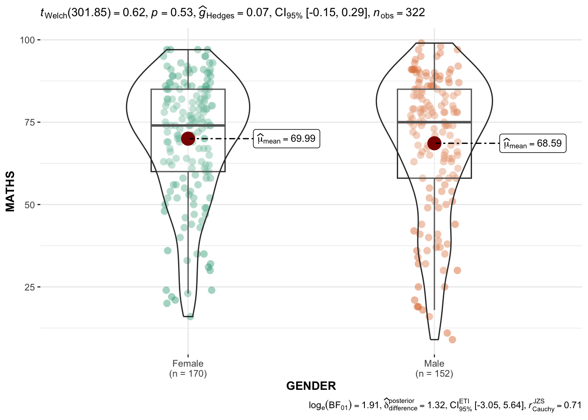
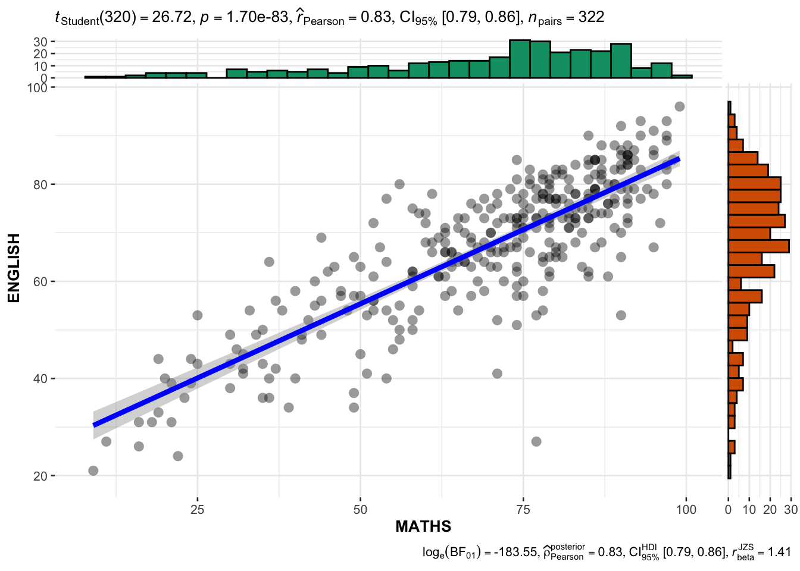

pacman::p_load(ggstatsplot, tidyverse)Hands-on_Ex04b—Visual Statistical Analysis
1 Learning Outcome
In this hands-on exercise, we will gain hands-on experience on using:
ggstatsplot package to create visual graphics with rich statistical information,
performance package to visualise model diagnostics, and
parameters package to visualise model parameters
2 Visual Statistical Analysis with ggstatsplot
ggstatsplot is an extension of ggplot2 package for creating graphics with details from statistical tests included in the information-rich plots themselves.
- To provide alternative statistical inference methods by default. - To follow best practices for statistical reporting. For all statistical tests reported in the plots, the default template abides by the [APA](https://my.ilstu.edu/~jhkahn/apastats.html) gold standard for statistical reporting. For example, here are results from a robust t-test: 
3 Getting Started
The following R packages will be used, they are:
tidyverse, a family of R packages to meet the modern data science and visual communication needs.ggstatsplot, an R package, combines statistical analysis and data visualization by producing ggplot2-based graphics with embedded statistical results, streamlining the process of creating publication-ready plots with minimal code.
Import The dataset for this hands-on exercise is imported into the R environment using the read_csv() function in the readr package and stored as the R object.
exam <- read_csv("data/Exam_data.csv")summary(exam) ID CLASS GENDER RACE
Length:322 Length:322 Length:322 Length:322
Class :character Class :character Class :character Class :character
Mode :character Mode :character Mode :character Mode :character
ENGLISH MATHS SCIENCE
Min. :21.00 Min. : 9.00 Min. :15.00
1st Qu.:59.00 1st Qu.:58.00 1st Qu.:49.25
Median :70.00 Median :74.00 Median :65.00
Mean :67.18 Mean :69.33 Mean :61.16
3rd Qu.:78.00 3rd Qu.:85.00 3rd Qu.:74.75
Max. :96.00 Max. :99.00 Max. :96.00 glimpse(exam)Rows: 322
Columns: 7
$ ID <chr> "Student321", "Student305", "Student289", "Student227", "Stude…
$ CLASS <chr> "3I", "3I", "3H", "3F", "3I", "3I", "3I", "3I", "3I", "3H", "3…
$ GENDER <chr> "Male", "Female", "Male", "Male", "Male", "Female", "Male", "M…
$ RACE <chr> "Malay", "Malay", "Chinese", "Chinese", "Malay", "Malay", "Chi…
$ ENGLISH <dbl> 21, 24, 26, 27, 27, 31, 31, 31, 33, 34, 34, 36, 36, 36, 37, 38…
$ MATHS <dbl> 9, 22, 16, 77, 11, 16, 21, 18, 19, 49, 39, 35, 23, 36, 49, 30,…
$ SCIENCE <dbl> 15, 16, 16, 31, 25, 16, 25, 27, 15, 37, 42, 22, 32, 36, 35, 45…head(exam,100)# A tibble: 100 × 7
ID CLASS GENDER RACE ENGLISH MATHS SCIENCE
<chr> <chr> <chr> <chr> <dbl> <dbl> <dbl>
1 Student321 3I Male Malay 21 9 15
2 Student305 3I Female Malay 24 22 16
3 Student289 3H Male Chinese 26 16 16
4 Student227 3F Male Chinese 27 77 31
5 Student318 3I Male Malay 27 11 25
6 Student306 3I Female Malay 31 16 16
7 Student313 3I Male Chinese 31 21 25
8 Student316 3I Male Malay 31 18 27
9 Student312 3I Male Malay 33 19 15
10 Student297 3H Male Indian 34 49 37
# ℹ 90 more rows4 Visualization
4.1 One-sample test: gghistostats() method
In the code chunk below, gghistostats() is used to to build an visual of one-sample test on English scores.
set.seed(1234)
gghistostats(
data = exam,
x = ENGLISH,
type = "bayes",
test.value = 60,
xlab = "English scores"
)
Default information: - statistical details - Bayes Factor - sample sizes - distribution summary
4.2 Unpacking the Bayes Factor
A Bayes factor is the ratio of the likelihood of one particular hypothesis to the likelihood of another. It can be interpreted as a measure of the strength of evidence in favor of one theory among two competing theories.
That’s because the Bayes factor gives us a way to evaluate the data in favor of a null hypothesis, and to use external information to do so. It tells us what the weight of the evidence is in favor of a given hypothesis.
When we are comparing two hypotheses, H1 (the alternate hypothesis) and H0 (the null hypothesis), the Bayes Factor is often written as B10. It can be defined mathematically as

- The Schwarz criterion is one of the easiest ways to calculate rough approximation of the Bayes Factor.
4.3 How to interpret Bayes Factor
A Bayes Factor can be any positive number. One of the most common interpretations is this one—first proposed by Harold Jeffereys (1961) and slightly modified by Lee and Wagenmakers in 2013:

4.4 Two-sample mean test: ggbetweenstats()
In the code chunk below, ggbetweenstats() is used to build a visual for two-sample mean test of Maths scores by gender.
ggbetweenstats(data = exam,
x = GENDER,
y = MATHS,
type = "np", #non-parametric
messages = FALSE)
4.5 Oneway ANOVA Test: ggbetweenstats() method
In the code chunk below, ggbetweenstats() is used to build a visual for One-way ANOVA test on English score by race.
ggbetweenstats(
data = exam,
x = RACE,
y = ENGLISH,
type = "p",
mean.ci = TRUE,
pairwise.comparisons = TRUE,
pairwise.display = "s",
p.adjust.method = "fdr",
messages = FALSE
)
“ns” → only non-significant
“s” → only significant
“all” → everything
4.5.1 ggbetweenstats - Summary of tests


4.6 Significant Test of Correlation: ggscatterstats()
In the code chunk below, ggscatterstats() is used to build a visual for Significant Test of Correlation between Maths scores and English scores.
ggscatterstats(data = exam,
x = MATHS,
y = ENGLISH,
marginal = FALSE,
)4.7 Significant Test of Association (Depedence) : ggbarstats() methods
In the code chunk below, the Maths scores is binned into a 4-class variable by using cut().
exam1 <- exam %>%
mutate(MATHS_bins =
cut(MATHS,
breaks = c(0,60,75,85,100)))In this code chunk below ggbarstats() is used to build a visual for Significant Test of Association
ggbarstats(exam1,
x = MATHS_bins,
y = GENDER)
5 Exploration
5.1 ggwithinstats()
In the code chunk below, [ggwithinstats()] is used to create a paired comparison visual between students’ English and Maths scores. This method transforms the data into long format and performs a non-parametric statistical test to determine whether there is a significant difference between the two subjects.
exam2 <- exam %>%
pivot_longer(cols = c(ENGLISH, MATHS),
names_to = "Subject",
values_to = "Score")
ggwithinstats(
data = exam2,
x = Subject,
y = Score,
paired = TRUE,
type = "np"
)
5.2 ggpiestats()
In the code chunk below, [ggpiestats()] is applied to examine the association between gender and Maths passing status (Pass/Fail). The function generates a pie chart annotated with statistical test results (e.g., chi-squared test), allowing for an intuitive understanding of categorical variable relationships.
exam3 <- exam %>%
mutate(MATHS_PASS = if_else(MATHS >= 50, "Pass", "Fail"))
ggpiestats(data = exam3, x = GENDER, y = MATHS_PASS)5.3 ggcorrmat()
In the code chunk below, [ggcorrmat()] is used to display a correlation matrix among English, Maths, and Science scores. This function computes pairwise correlation coefficients (Pearson’s method in this case) and visualizes them in a heatmap with embedded significance markers for each pair.
ggcorrmat(data = exam,
cor.vars = c(ENGLISH, MATHS, SCIENCE),
type = "p")6 Reference
- Kam, T.S. (2023). Visual Statistical Analysis.